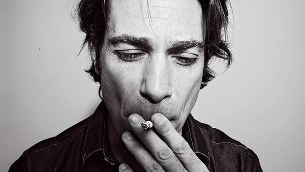

From Paris With Love: D’Julz Talks Bass Culture

The story of D’Julz is that of a veteran who still finds dance culture as fresh and exciting as the day he began; a fact reflected in both his enthusiasm, as well as the focused energy still present in what he’s doing. He’s the DJ behind the enduring Bass Culture nights at Rex Club in Paris – the iconic club’s longest-running event, and potentially one of the longest-running house and techno nights in the history of dance culture. D’Julz laughs when the possibility is presented to him.
“I don’t know. It’s definitely the longest running club night at The Rex, and possibly Paris,” he told Data Transmission. “You’re right, I never really thought about it like that. But you know, it doesn’t really feel like this at all, that’s the funny thing. I don’t realise that it’s so old. Otherwise I would stop it I guess, if it feels like that, if it feels like, ‘oh shit, again’. So I guess that’s why it keeps going and going, because it feels like almost the first night every time”.
Bringing a consistent approach over the years, and focussing on the deep and dubby end of house and techno, as a contrast to the filtered ‘French touch’ sound that dominated when he began, the Bass Culture parties saw D’Julz playing long sets over the evening’s seven hours, typically inviting guests like Terry Francis and Josh Wink to share DJ duties.
More than 15 years later, and not only is the night still going, but the brand was also the catalyst for another project begun four years ago by D’Julz; his Bass Culture record label. He’s now celebrating with This is Bass Culture: 4 years of Bass Culture Records, a carefully curated mix that’s both a showcase for some of the label’s more timeless moments, as well as highlighting some excellent upcoming releases from the label’s roster.
Speaking with D’Julz in his Paris home last month, Data Transmission found him to be an affable and chilled out guy, speaking with the articulate voice of a veteran craftsman, with plenty of insightful observations about the ever-moving cycles of dance culture.
You talk about how the experience of running a club night as still feeling fresh and new. I guess that’s the great thing about electronic music, it can always feel fresh and exciting.
As a DJ, I always need to be excited. I need to buy new music, I need to look at what’s hot and new, to stay curious. But at the same time, I have very strong roots in classic house and techno, so I always try to find the balance between my style and the new things. At the moment there is a kind of a retro vibe in a lot of the records, and I find this interesting because as an ‘older’ DJ, it’s good to be able to play older music and records. But I wouldn’t be able to just do that; to play only the same music that I was loving ten or twenty years ago. Some people do exactly that, and they do it really well, but for me it would feel like repeating myself. But at the same time, I still love some of these records. So I always try to find the balance between the new records that I find in the shop, and still mixing some of my older classics.
I guess that’s what I try to do with the Bass Culture nights; I never try to jump on the bandwagon. If you travelled back to one of the first nights in ’97, or if you go to the next one this year, you’re still going to find the same elements of house and techno. Even though the guests would be different, maybe it was Terry Francis in ’97, or Chris Duckenfield or Josh Wink, and today it might be Raresh or Cassy. I don’t feel the music is that different though. So I guess that would explain why the night is successful, because it has a strong identify. But at the same time, I haven’t been playing the same records. So it’s the thin line between having your sound, but also progressing and going with the time. So as an artist and a DJ, I think I do that. And my night reflects that as well. But it’s not a strategy, it’s not thought about, it’s just how it is. So I’m lucky it works [laughs].
I guess what you can say about the house and techno you play, the records might sound different to what was being played back then, but it has the same energy or feeling?
Yeah. And also there are cycles. At the moment, I could play literally play 50 percent of the records I played in ’97 in today’s set, and nobody would notice it. Or people would ask, ‘what is that new track?’ For the past three or four years there has been a big comeback to the old school house and techno kinda vibe. But maybe seven years ago when the minimal thing was pretty big, no way… playing old house would have been a lot more difficult. And I still did, but it was a harder thing to do because the sound was completely different. It was a lot more clean, more like a sound engineer kind of music. And I was not feeling that vibe so much, it was a harder time. I found some people in that sound who were maybe closer to my sound, maybe Steve Bug or Matthias Tanzmann at the time, or even Loco Dice who had a minimal label and was playing basically house and techno. Right now though, it’s definitely easier to mix older things with the new things. But it’s the cycle; you have to find a way to go through transitions, and with the new trends that sometimes don’t really resonate with your tastes. And I managed to do that, but when actually house and techno kind of comes back, I can definitely feel like a fish in the sea. It’s easier for me to make my point for sure, and that’s the case at the moment.
How often are the nights happening at the moment?
For the first three or four years Bass Culture was a monthly party, and then I started to pick up more international gigs, so since 2001 it became every other month. So I do six or seven nights a year. And it’s great like this, and that’s also one of the reasons why it lasted so long I think, because I have time to come up with a new set to play there, and to think of new guests. I don’t get tired of it, and people don’t get tired of me or the night either.
Who are some of the people you have been hosting recently?
The past few guests have been Raresh, Mike Huckaby, Mr G, Daniel Bell. The next one is going to be Jordan Peak, and John Jastszebski, who are guys from the label. I try to do one or two nights a year where we really focus on artists from the label, but I don’t want to do that too much, because the night was originally there before the label ever existed. So I still want to be able to invite artists and DJs that I like, who are not necessarily on the label. Maybe they might be on the label later as remixers or something else. But the next night will be a Bass Culture anniversary party with me and two other artists from the label.
Photos: Stephane Ghenacia
The label has been around for four years now. Why did you decide to begin Bass Culture at that particular time, especially when the night had already been around for so long?
When I started the label, I didn’t see the connection with the night so much. I just needed a name. But I had never thought to start a label before, because I was already too busy DJing and learning my studio skills. I guess in 2008, it was the right time. I’d just had a big record out, I was DJing a lot, and it was the right time to think of something else, to think of doing something new. And also, like I said before, the music was changing. I could feel the whole minimal era was fading out, and I could start to see the new talent coming up with music that was really, really touching me, and I thought, wow, that could be a good time to start the label. Because there is so much more interesting new music coming out that is completely where I’m at, and where I’ve always been in terms of style. You know, I was inspired. I could definitely come out with something interesting and fresh at that moment. So I contacted just a few new names, four or five people that had just two or three records out, who were pretty much unknown, but who I felt had something special, or had records that I was playing a lot that year. I felt their sound was fresh for that time; it was very different to what was being heard everywhere else, and thought that would be the perfect thing for the label. So I contacted those guys, it was Lemos, Alex Picone, Anonym from Detroit, and a few others. Zoe Xenia…
I didn’t know what sort of response I would get, or whether they even knew who I was, but the reaction was really, really positive. Not only did they come back to me, but they said ‘we’re a big fan of your music, thank you for asking us, we’re gonna make music for you’. And the tracks they sent me were really, really good. And so I thought, whoa that’s it. I’m starting a label. If they hadn’t sent me music that was as good as what they did, I probably wouldn’t have started the label. I thought, let’s see what they come up with, and they actually sent me really, really good stuff. Good enough to play everywhere, and I was roadtesting those tracks for a year, because it takes time to start a label. By the time you have the tracks and you decide to do it, you need to find a distributor, you need to find someone to help you with a business plan. So I had time to really play those tracks, and when they did come out it was like ‘bang’, the label started really fast, and every big DJ was playing or charting those first releases. So it was just the best start that I could have imagined.
It’s good to hear about a positive experience, because it’s perhaps not the easiest time to start a label. Maybe the business side of it is a little bit harder than it was ten years go?
Yeah. As a producer, I had worked with a lot of people and labels throughout the late 90s and early 2000s. And I saw how everything dropped around 2005 and 2006, and it was also in my record sales [laughs]. A lot of those labels shut down, and while others continued, the people behind them used to be able to make a living out of those labels, but this was not possible anymore. So I knew that when starting the label that I wasn’t going to make money with it; and I don’t make any money with it, that comes from being a DJ. Some releases do better than others, and you try to find a balance between both, and if you’re lucky then at the end of the year then you won’t have lost any money. But it is hard, and it is something that you do as an investment. But I’m glad I’m doing it, and as long as I don’t lose too much money I’m going to keep on doing it. Maybe one day we’ll reach the point again where we can make a living out of running a label, but we haven’t reached that point yet.

Does it yield returns in other ways?
It’s not something that obligatory for a DJ/producer… But it does participate in making a brand, and it’s another way to express your style as an artist. For me, the music I put out on a label is the same kind of music that I would play or produce myself. So it all comes together. I guess some people who might not necessarily know me or my music, they might discover me through my label. They might think, this guy is putting out some really interesting music that I really like, so if I book him as a DJ, that’s the kind of sound you’re going to hear. So it’s a good way of making an artistic statement. It’s also a great way of bringing together a family of producers; the ones who send me their music also want to have a bit of the Bass Culture image next to their name, and their music is going to feed the quality of the label too, so it’s like an exchange. You don’t do it for the money anymore. I want quality music on the label, and quality artists want to have a label that represents them and their sound in a positive fashion. And that’s how it works.
What were you trying to do with the This is Bass Culture compilation, were you mainly motivated by trying to capture the past four years of the label?
The concept of the compilation actually evolved a little from when we began putting it together. Originally I wanted more of a focus on the past, to kind of finish the first chapter, to really say ‘this is Bass Culture’ and introduce the story of the label to an audience that doesn’t really buy vinyl or singles, though who might be more likely to buy albums or compilations. But in the process of doing this, I realised I wanted to put together a DJ mix that was representative of myself as well. It was not only a Bass Culture compilation; it had to be a D’Julz compilation too. To do that I had to really focus on the sound that I would play today, and make the tracks work really well together to have the best possible flow. So it evolved towards more of an ‘introducing Bass Culture’ concept, and what Bass Culture is today… I chose the tracks that had aged well and are still quite effective today, instead of taking the tracks that were necessarily played or sold the most. They are the tracks that still work best in a DJ set today.
The final product is a mix of some tracks that are four years old, some that are three years old, some that are six months old, and some that are not released yet. So it was a good exercise. Not an easy one, because there are a lot of different elements that you want to put into one hour, and a lot of different types of music from the label that you want to represent, there’s been more than 35 releases now. Some releases were classic deep house, some were more towards techno, and some were big dancefloor weapons. I have to try and fit all of that in, and it needed to have progression too, so I did my best to combine all of those elements together in the best possible way in terms of flow. But it’s great to see that the label is aging well, and some of the music released four years ago sounds as fresh today as it did back then.
This is Bass Culture: 4 Years of Bass Culture Records mixed by D’Julz is out now on Bass Culture. Grab your copy here
Photos: Stephane Ghenacia